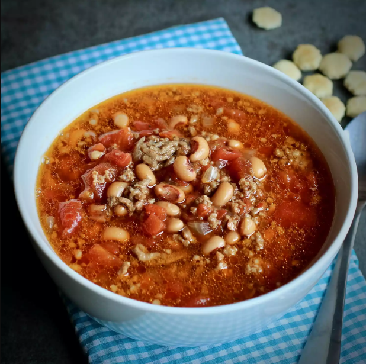

Black Eyed Pea Soup

Description
Ingredients
- 1 pound bulk pork sausage
- 1 pound ground beef
- 1 large onion, diced
- 4 cups water
- 3 (15 ounce) cans black-eyed peas, drained
- 1 (28 ounce) can diced tomatoes
- 1 (10 ounce) can diced tomatoes with green chile peppers, undrained
- 3/4 teaspoon garlic salt
- 1/2 teaspoon salt
- 1 (4 ounce) can chopped green chilies
- 4 teaspoons molasses
- 4 beef boullion cubes
- 1/4 teaspoon ground black peppe
- 1/4 teaspoon ground cumin
Steps
- In a large Dutch oven, cook and stir the pork sausage and ground beef with the onion over medium heat until the meat is no longer pink for 10 to 12 minutes.
- Drain off excess fat. Pour in the water, and stir in black-eyed peas, diced tomatoes with green chiles, Worcestershire sauce, garlic salt, salt, canned green chilies, molasses, beef bouillon cubes, black pepper, and cumin until thoroughouly mixed.
- Bring the soup to a boil, reduce heat to a simmer, cover, and simmer for 45 minutes.